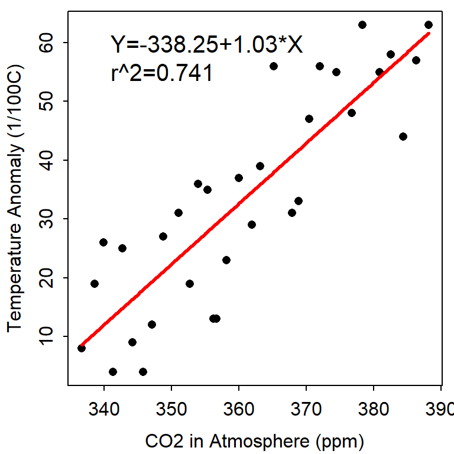

The temperature data is the Global Land-Ocean Temperature Index from the Goddard Institute of Space Studies (GISTEMP). It is reported in units of 1/100 of a degree centigrade increase above the 1950-1980 mean and is often referred to as the global surface temperature anomaly. The NASA Goddard Institute for Space Studies (GISS) is a laboratory in the NASA’s Goddard Space Flight Center’s Earth Sciences Division, which is part of Goddard Space Flight Center’s Sciences and Exploration Directorate.
The CO2 data are from The Earth System Research Laboratory of the National Oceanic and Atmospheric Administration (NOAA). Specifically, these CO2 data are a record of annual mean atmospheric CO2 concentration at Mauna Loa Observatory, Hawaii, and constitute the longest continuous record of atmospheric CO2 concentration. This remote location at high altitude in Hawaii was chosen because it is relatively unaffected by any local emissions and so is representative of the global concentration of a well-mixed gas like CO2.These observations were started by C. David Keeling of the Scripps Institution of Oceanography in March of 1958 at a NOAA facility and are often referred to as the Keeling Curve. Data are reported as a dry mole fraction defined as the number of molecules of carbon dioxide divided by the number of molecules of dry air multiplied by one million (ppm).
Is the temperature anomaly related to CO2 amount.
